Projetos
Meu portfólio
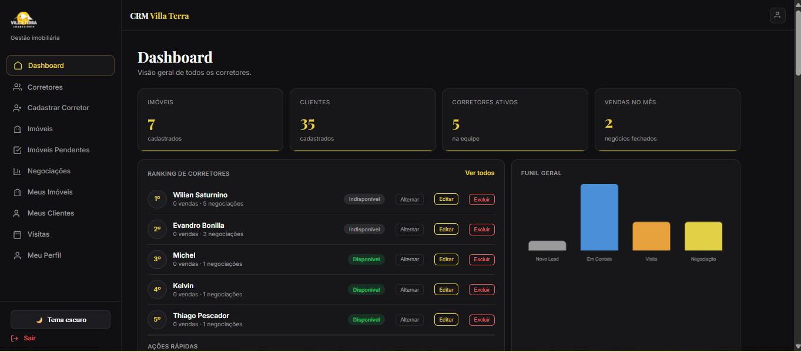
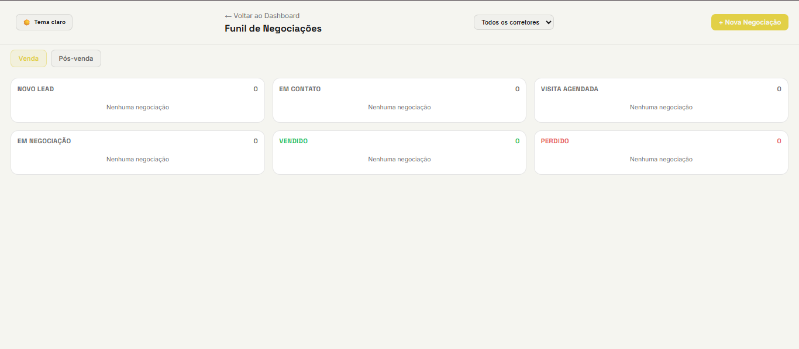
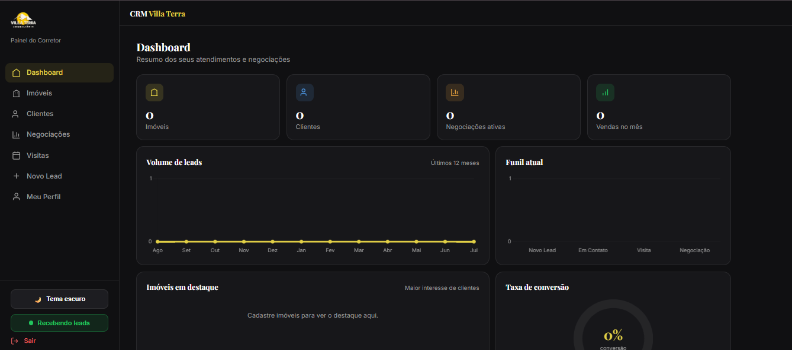
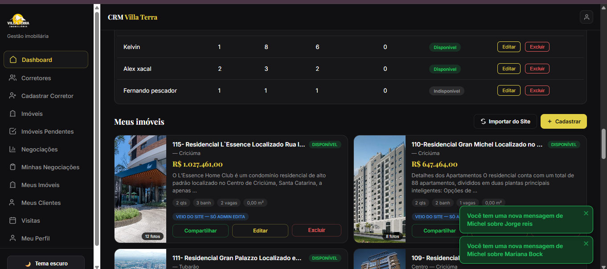
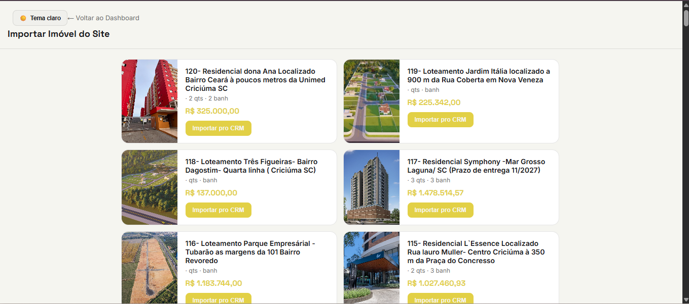
Projeto em destaque · Cliente real
CRM Villa Terra Imobiliária
Sistema de gestão interno desenvolvido sob medida para uma imobiliária de Criciúma/SC, em produção e usado diariamente por 21 corretores e pelo administrador. Isolamento total de dados entre carteiras, funil de negociações em Kanban, agendamento de visitas, notificações em tempo real e push, integração bidirecional com o site público da empresa e um assistente de IA com busca por voz, exclusivo para o administrador, que responde com base nos dados reais do CRM.
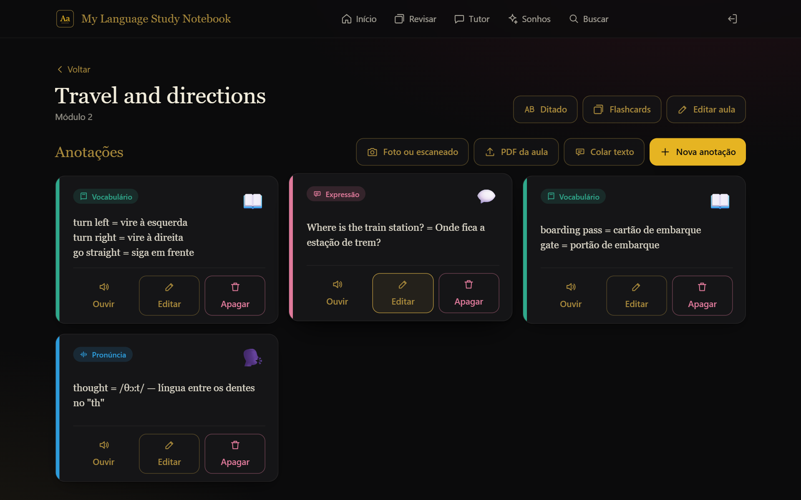
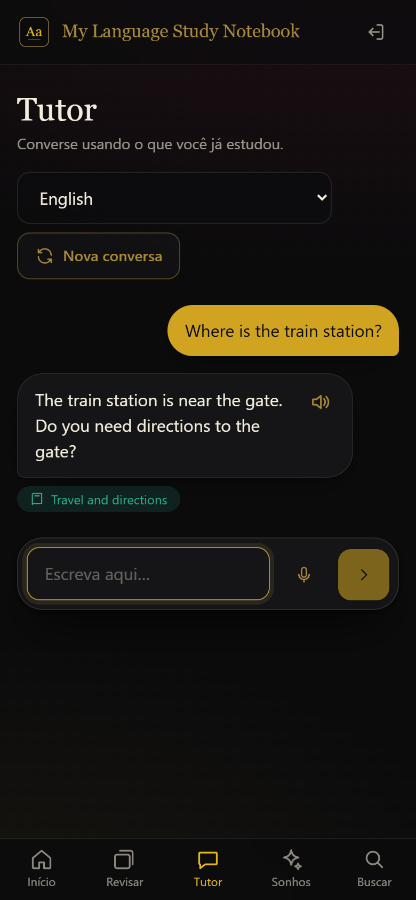
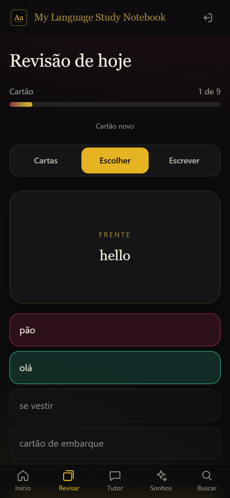
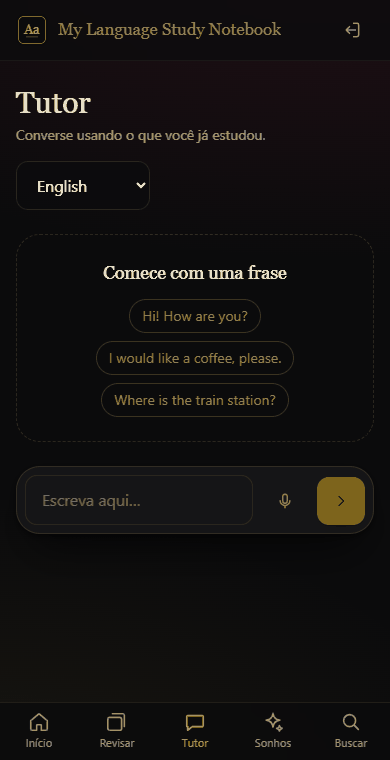
IA Generativa · RAG · Machine Learning
My Language Study Notebook 🔒 Código privado
Caderno de estudos de idiomas com IA: tutor com RAG que responde só com o que foi estudado, citando a aula, flashcards gerados por LLM com saída validada por Pydantic, avaliação de pronúncia e um modelo de esquecimento treinado com 949 mil sessões de revisão do Duolingo. Cada recurso de IA tem evals com métricas.
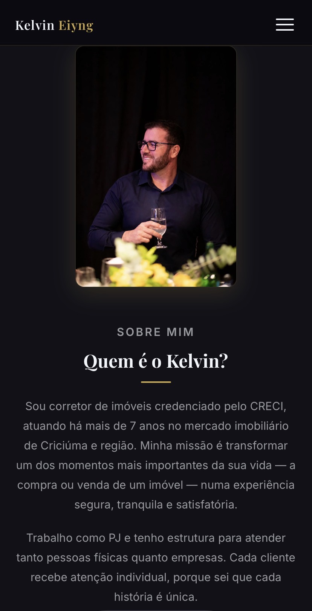
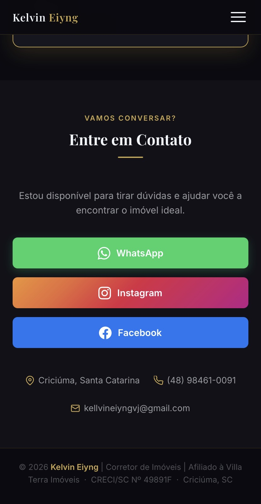

HTML5 · CSS3 · Responsivo · Mobile First · Portfólio
Portfólio Kelvin Eiyng 🔒 Privado
Portfólio profissional desenvolvido para apresentação pessoal de corretor de imóveis, com links diretos para WhatsApp, Instagram e Facebook.
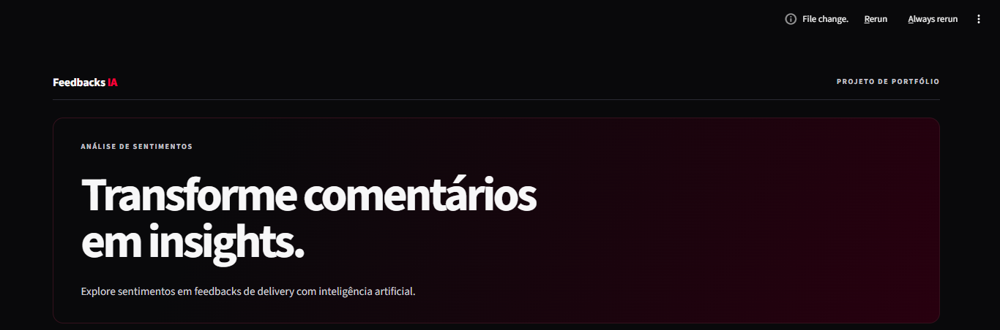
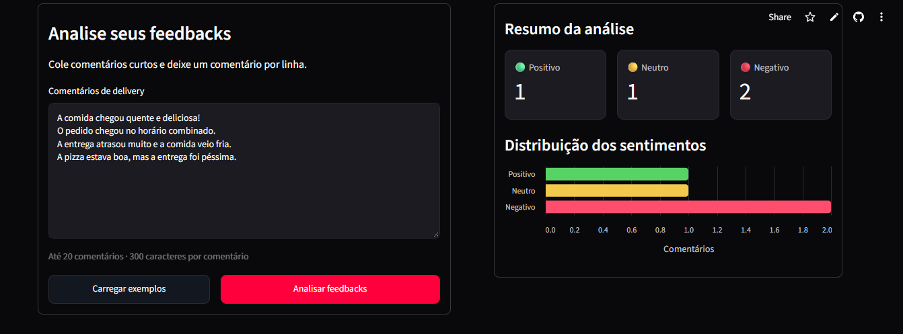
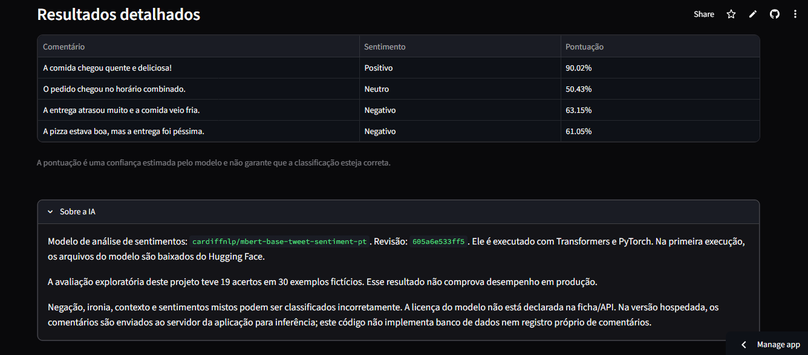
Python · NLP · Machine Learning · IA
Analisador de Sentimentos de Feedbacks
Classifica feedbacks de delivery em português como positivo, neutro ou negativo com um Transformer pré-treinado da Hugging Face, e compara com um classificador TF-IDF + regressão logística que eu treinei: 73,5% de acurácia e 73,27% de macro-F1 em 1.200 textos de teste. Avaliação e limitações documentadas, com testes no GitHub Actions.
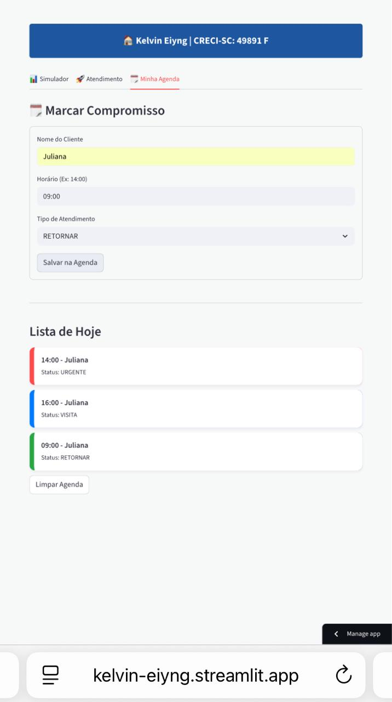
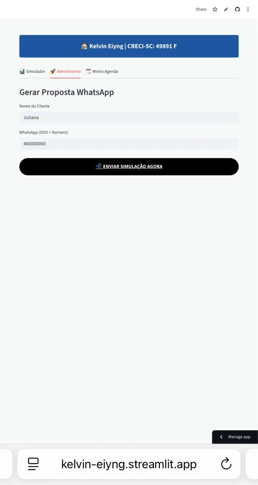
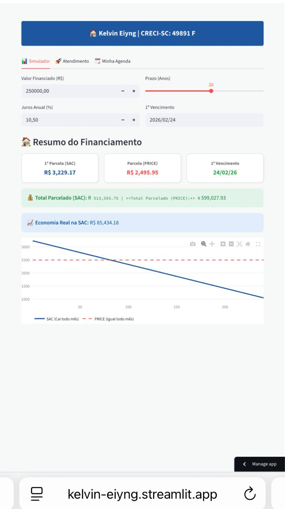
Python · Streamlit · Automação
Central do Corretor
Sistema completo para corretores com agenda, gestão de atendimentos e simulador financeiro integrado.
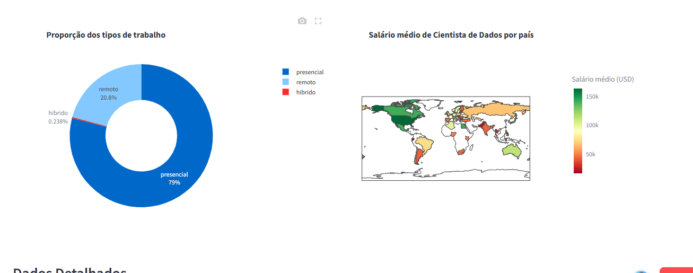

Python · Análise de Dados
Dashboard de Salários
Dashboard interativo para análise de salários na área de dados, com gráficos e métricas detalhadas em USD.